คู่มือการใช้งานระบบ Exam Proctor Studio (v6.3)
กำลังโหลดเนื้อหาคู่มือที่สอดคล้องกับสิทธิ์การเข้าใช้งานของท่าน...
1. บทนำและสถาปัตยกรรมระบบคุมสอบ
ระบบ Exam Proctor Studio ออกแบบมาเพื่ออำนวยความสะดวกแก่ครูผู้สอนในการจัดสอบออนไลน์ โดยครูสามารถสร้างห้องสอบที่ครอบลิงก์แบบทดสอบ Google Forms เดิมที่มีอยู่ได้ทันที พร้อมระบบป้องกันการทุจริตแบบเรียลไทม์ (บังคับเต็มจอ, ตรวจจับการสลับแท็บ/ย่อหน้าต่าง, ตรวจจับการคลิกออกนอกหน้าจอ และบล็อกคีย์ลัด) โดยนักเรียนไม่ต้องติดตั้งโปรแกรมเสริมใดๆ
2. การเข้าสู่ระบบและความปลอดภัย (Staff Login & 2FA)
ครูผู้สอนเข้าสู่ระบบผ่านหน้า admin/login.html ด้วยชื่อผู้ใช้และรหัสผ่านที่ได้รับมอบหมาย:
- ชื่อผู้ใช้ (Username): กรอกชื่อผู้ใช้ เช่น
teacher - รหัสผ่าน (Password): ความยาวอย่างน้อย 8 ตัวอักษรขึ้นไป
- ปุ่มแสดงรหัสผ่าน: คลิกเพื่อตรวจสอบตัวสะกด ป้องกันการกรอกผิดพลาด
- การยืนยันตัวตน 2FA: หากบัญชีเปิดใช้งาน 2FA ระบบจะแสดงป็อปอัปให้กรอกรหัส 6 หลักจากแอป Authenticator
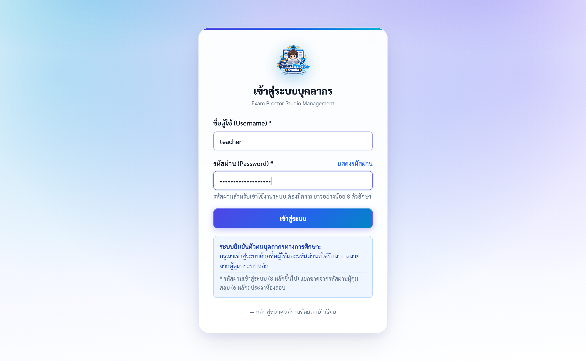
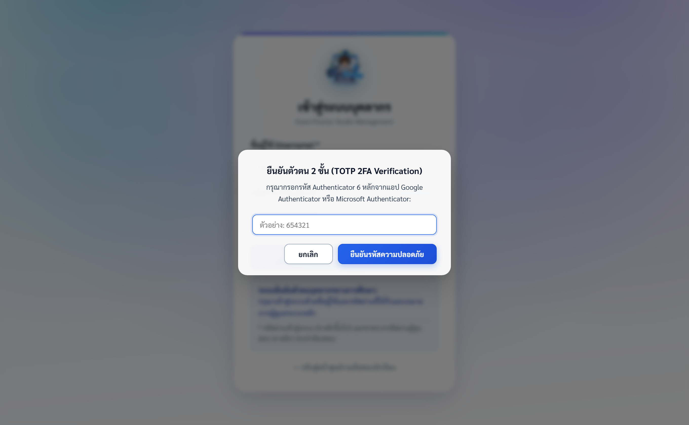
3. การสร้างห้องสอบใหม่ (Create Room)
เข้าสู่เมนู "สร้างห้องสอบ" (admin/create.html) เพื่อกำหนดข้อมูลข้อสอบและสร้างลิงก์สำหรับส่งให้นักเรียน:
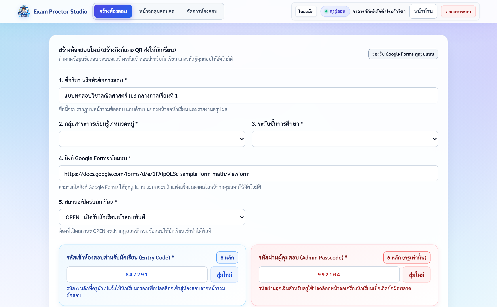
- ชื่อวิชา หรือหัวข้อการสอบ: เช่น *"แบบทดสอบวิชาคณิตศาสตร์ ม.3 กลางภาคเรียนที่ 1"*
- กลุ่มสาระการเรียนรู้ / หมวดหมู่: เลือกระบุหมวดหมู่วิชา
- ระดับชั้นการศึกษา: เลือกระดับชั้นของนักเรียน
- ลิงก์ Google Forms ข้อสอบ: วางลิงก์ Google Forms (รองรับทั้งลิงก์ยาวและลิงก์สั้น forms.gle)
- สถานะเปิดรับนักเรียน: เลือก
OPENเพื่อเปิดสอบทันที หรือCLOSEDเพื่อเตรียมไว้ก่อน
4. รหัสผ่าน 2 รูปแบบ (Entry Code VS Admin Passcode)
ระบบสร้างรหัสผ่าน 2 ชุดที่มีหน้าที่แยกขาดจากกัน เพื่อความโปร่งใสและปลอดภัย:
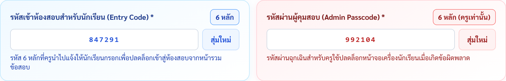
รหัสผ่านผู้คุมสอบ (Admin Passcode 6 หลัก สีแดง): ห้ามเปิดเผยแก่นักเรียน ครูจะใช้เดินไปกดปลดล็อกหน้าจอเครื่องนักเรียนกรณีเกิดเหตุจำเป็น
5. การส่งต่อลิงก์และการฉาย QR Code ขึ้นจอโปรเจกเตอร์
เมื่อกดปุ่ม "สร้างห้องสอบและบันทึกลงระบบ" กล่องผลลัพธ์จะปรากฏขึ้นพร้อมตัวเลือกการแชร์:
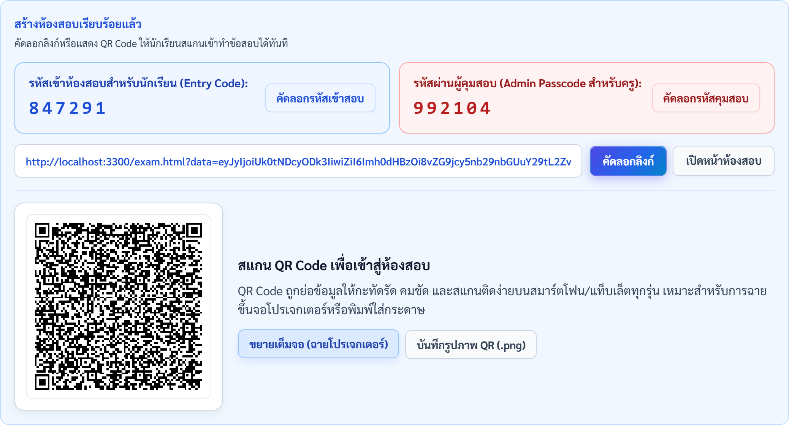
คลิกปุ่ม "ฉาย QR Code ขยายใหญ่" เพื่อเปิดหน้าจอแสดง QR Code คมชัดขนาดใหญ่ สำหรับฉายขึ้นจอโปรเจกเตอร์หน้าห้องสอบ หรือกดบันทึกเป็นรูปภาพ .png:
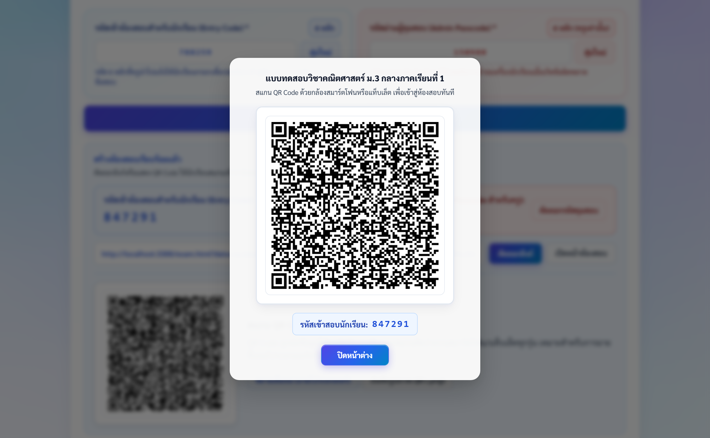
6. การจัดการห้องสอบและประวัติของตนเอง (Rooms Management)
เข้าสู่เมนู "จัดการห้องสอบ" (admin/rooms.html) จะแสดงเฉพาะห้องสอบที่ครูท่านนี้เป็นผู้สร้าง (มี Badge สีน้ำเงินระบุชัดเจน):
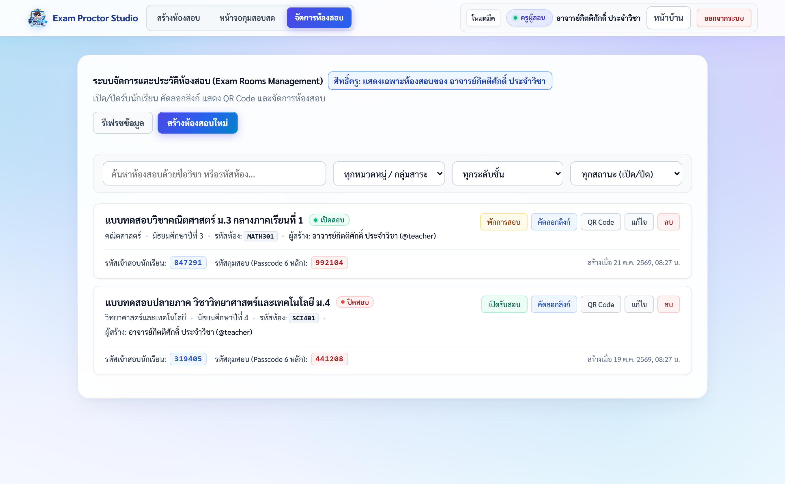
ครูสามารถกดปุ่ม "แก้ไข" เพื่อเปลี่ยนชื่อวิชา หรือเปลี่ยนรหัสผ่าน หรือกดปุ่ม "ลบ" พร้อมหน้าต่างยืนยัน:
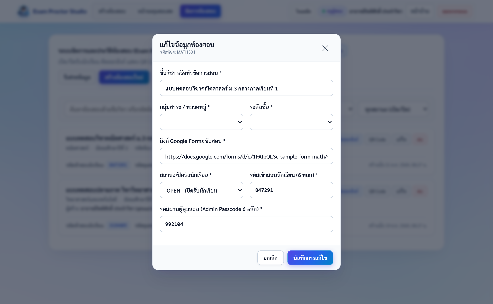
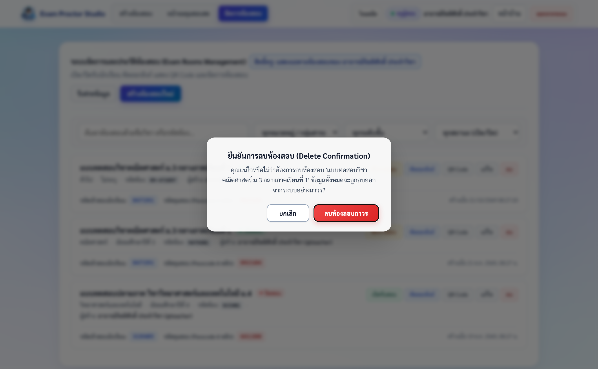
7. ศูนย์คุมสอบสดแบบเรียลไทม์ (Live Proctoring Center)
เข้าสู่เมนู "หน้าจอคุมสอบสด" (admin/monitor.html) เพื่อติดตามผู้สอบสดผ่านสตรีมมิ่งความเร็วสูง:
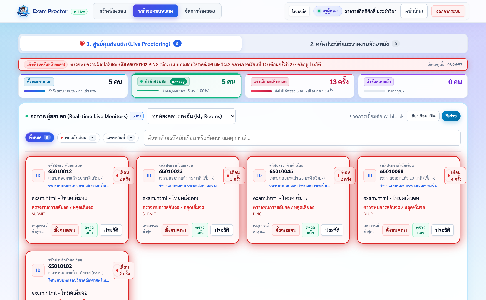
แถบควบคุมจำเป็นขณะคุมสอบจริง (Live Action Bar):
8. การอ่านจอภาพผู้สอบและการจัดการแจ้งเตือนสด
การ์ดจอภาพนักเรียนสดจำแนกสถานะด้วยสีอย่างเด่นชัด:
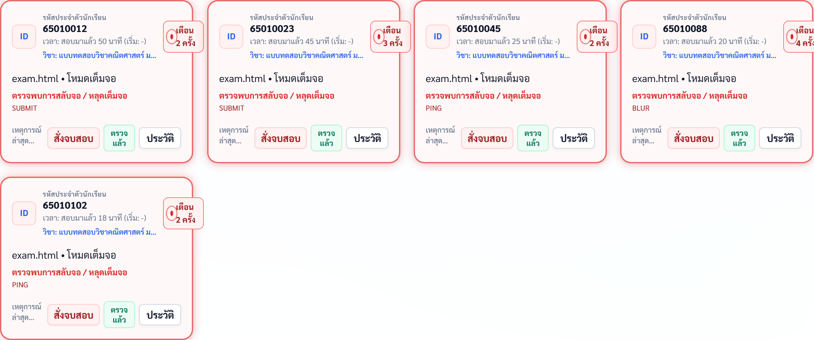
9. หน้าต่างรายละเอียดผู้สอบและไทม์ไลน์เหตุการณ์
คลิกที่การ์ดนักเรียนเพื่อเปิดหน้าต่างบันทึกพฤติกรรมระดับวินาที (Timeline):
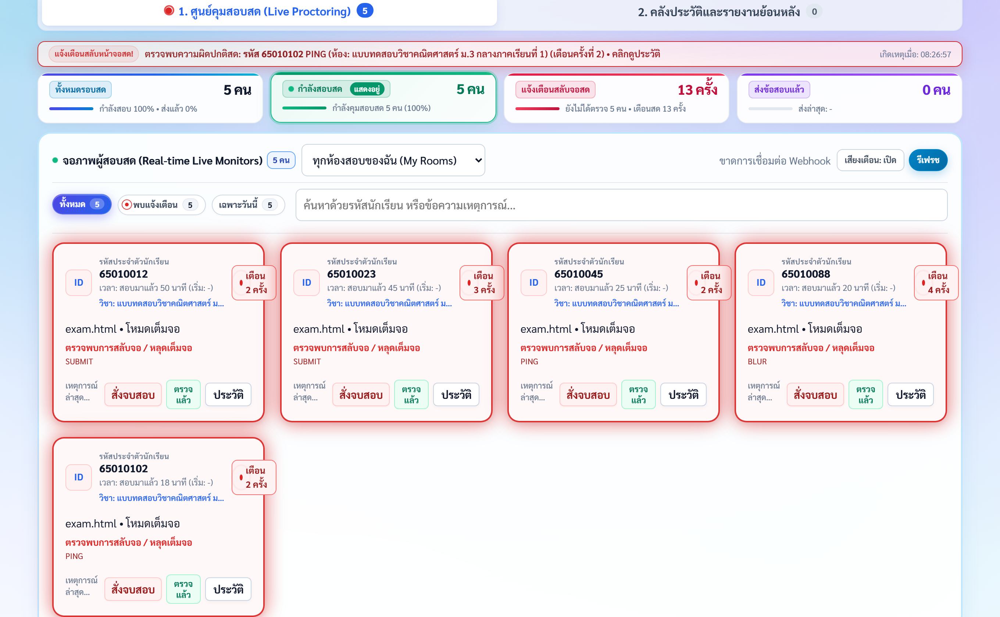
10. คลังประวัติผู้ส่งข้อสอบและตารางบันทึกเหตุการณ์ (Exam Archives)
คลิกแท็บ "2. คลังประวัติและรายงานย้อนหลัง" เพื่อดูประวัตินักเรียนที่ส่งข้อสอบแล้ว แยกตามวันที่:
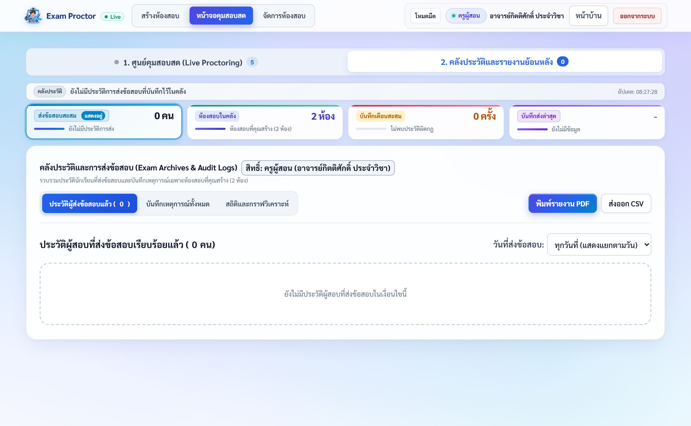
สลับไปดูตารางบันทึกเหตุการณ์ทั้งหมด (Audit Log Table) เพื่อตรวจสอบย้อนหลัง:
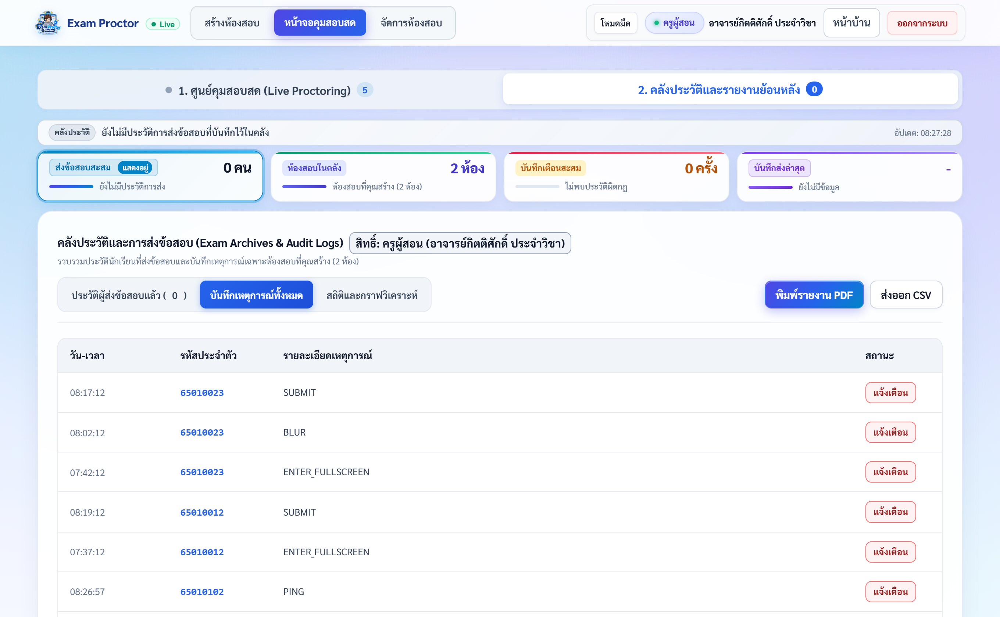
11. แดชบอร์ดกราฟและสถิติวิเคราะห์ (Analytics Dashboard)
มุมมองกราฟสถิติวิเคราะห์ดัชนีความซื่อสัตย์ Integrity Rate และไทม์ไลน์เหตุการณ์:

12. การพิมพ์รายงานสรุปผลการคุมสอบราชการ (Official PDF Report)
คลิกปุ่ม "พิมพ์รายงาน PDF" เพื่อเปิดเอกสารสรุปผลทางการตามระเบียบงานสารบรรณ พร้อมช่องลงนามกรรมการคุมสอบ:
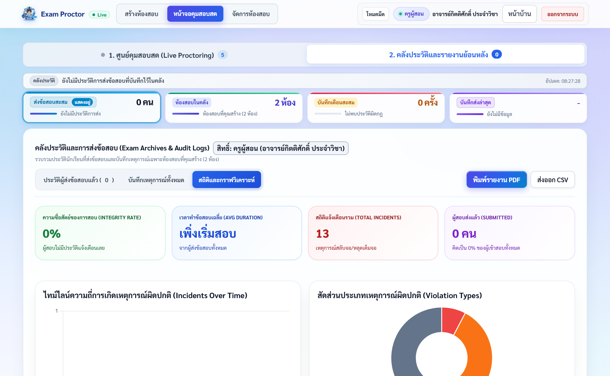
13. การส่งออกข้อมูลเป็นไฟล์ Excel / CSV
คลิกปุ่ม "ส่งออก CSV" เพื่อดาวน์โหลดข้อมูลประวัติผู้เข้าสอบไปเปิดคำนวณตัดเกรดใน Microsoft Excel ได้ทันที โดยภาษาไทยไม่เพี้ยน
14. คำถามที่พบบ่อยสำหรับครูผู้สอน (FAQ)
Q1: นักเรียนเผลอกดปิดหน้าต่างสอบ หรือเครื่องดับ ต้องทำอย่างไร?
คำตอบ: ให้นักเรียนเปิดเบราว์เซอร์แล้วเข้าลิงก์เดิมหรือสแกน QR Code อีกครั้ง ระบบจะจำสถานะและให้นักเรียนทำแบบทดสอบต่อได้ทันที โดยจะบันทึกประวัติการหลุดจอลง Timeline ให้ครูตรวจสอบ
Q2: หน้าจอนักเรียนล็อคหรือขึ้นเตือนให้ใส่รหัสปลดล็อก ครูต้องทำอย่างไร?
คำตอบ: ให้ครูเดินไปที่เครื่องนักเรียน แล้วกรอก Admin Passcode 6 หลัก ประจำห้องสอบนั้นเพื่อปลดล็อกหน้าจอ
Q3: ลืมรหัสผ่านเข้าสู่ระบบหลังบ้าน ต้องทำอย่างไร?
คำตอบ: ให้ติดต่อผู้ดูแลระบบหลัก (Admin) ของสถานศึกษา เพื่อให้ Admin กดรีเซ็ตรหัสผ่านใหม่ให้ท่านได้ทันที
1. บทบาทและสิทธิ์ของผู้ดูแลระบบ (Admin Role Overview)
ในฐานะ ผู้ดูแลระบบหลัก (Master Admin) ท่านมีสิทธิ์สูงสุดในการกำกับดูแลห้องสอบทุกห้องของครูทุกคนในสถาบันการศึกษา จัดการบัญชีผู้ใช้งานระบบ (เพิ่ม/แก้/ลบ/รีเซ็ตรหัสผ่าน) ตัดรอบการสอบสด (Reset Session) และตั้งค่าระบบกลางร่วมกับฐานข้อมูล Cloud Neon PostgreSQL
admin ได้รับการป้องกันไม่ให้ถูกลบหรือระงับการใช้งานเด็ดขาด เพื่อป้องกันความเสี่ยงจากการล็อคตัวเองออกจากระบบ
2. การเข้าสู่ระบบและความปลอดภัยระดับสูง (Master Admin Login)
ผู้ดูแลระบบเข้าสู่ระบบด้วยสิทธิ์ Master Admin แถบ Navbar จะแสดง Badge สีแดง ผู้ดูแลระบบ และแสดงเมนูครบทั้ง 5 เมนูหลัก:
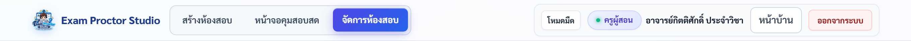
3. การกำกับดูแลห้องสอบรวมทั้งระบบ (System Oversight)
ในเมนู "จัดการห้องสอบ" สิทธิ์ Admin จะแสดงห้องสอบทั้งหมดของครูทุกคนในระบบ พร้อมสิทธิ์ในการแทรกแซง เปิด/ปิดห้อง หรือแก้ไขข้อมูลกรณีฉุกเฉิน:
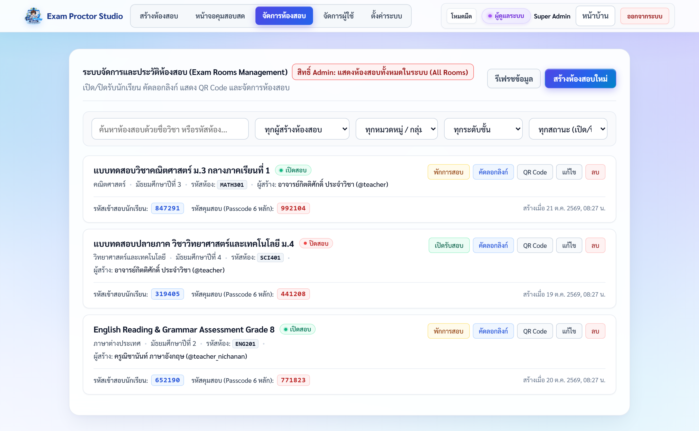
4. การใช้งานตัวกรองผู้สร้างห้องสอบ (Creator Filter)
Admin สามารถใช้เมนูดรอปดาวน์ "ทุกผู้สร้างห้องสอบ" ที่แถบค้นหา เพื่อเลือกดูเฉพาะห้องสอบของครูแต่ละท่านได้อย่างรวดเร็ว
5. การเริ่มรอบสอบใหม่และการตัดรอบข้อมูล (Reset Session)
ในหน้าจอคุมสอบสด (admin/monitor.html) เฉพาะสิทธิ์ Admin จะมีปุ่ม "เริ่มรอบใหม่" (Reset Session):
6. ระบบจัดการบัญชีผู้ใช้งาน (User Management)
เข้าสู่เมนู "จัดการผู้ใช้" (admin/users.html) เพื่อควบคุมบัญชีบุคลากร:
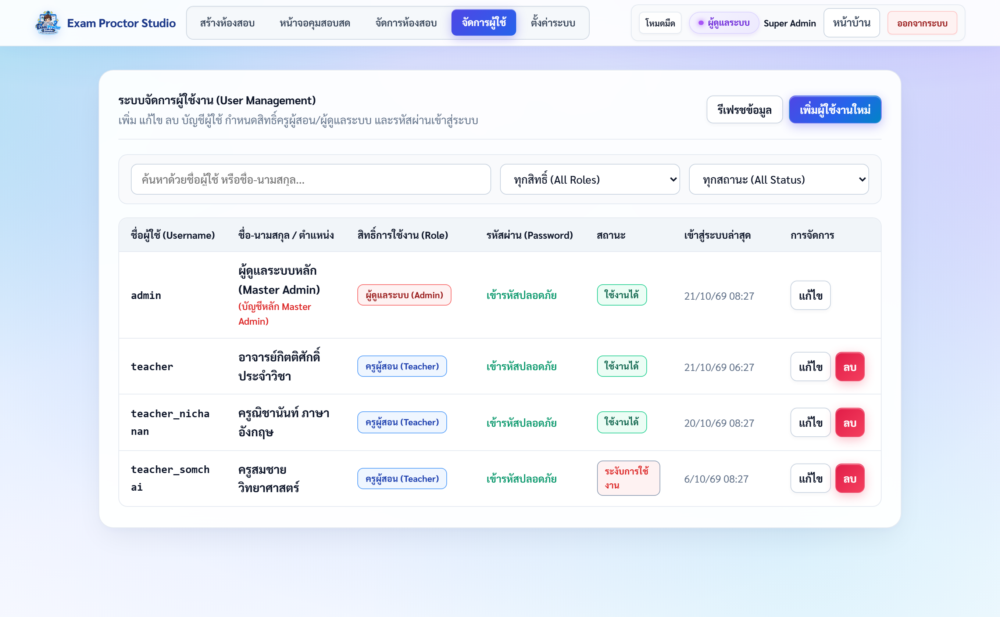
- เพิ่มผู้ใช้งานใหม่: คลิกปุ่ม *"เพิ่มผู้ใช้งานใหม่"* กำหนด Username, Display Name, Role (Teacher/Admin) และรหัสผ่าน
- แก้ไขและเปลี่ยน Role: คลิกปุ่ม *"แก้ไข"* เพื่อเปลี่ยนสิทธิ์ หรือเปลี่ยนสถานะเป็น *"ระงับการใช้งาน"*
- รีเซ็ตรหัสผ่านครู: สามารถกรอกรหัสผ่านใหม่ในหน้าต่างแก้ไขได้ทันทีในเวลาไม่เกิน 1 นาที
7. การตั้งค่าระบบกลางและการเชื่อมต่อ Cloud Database
เข้าสู่เมนู "ตั้งค่าระบบ" (admin/settings.html):
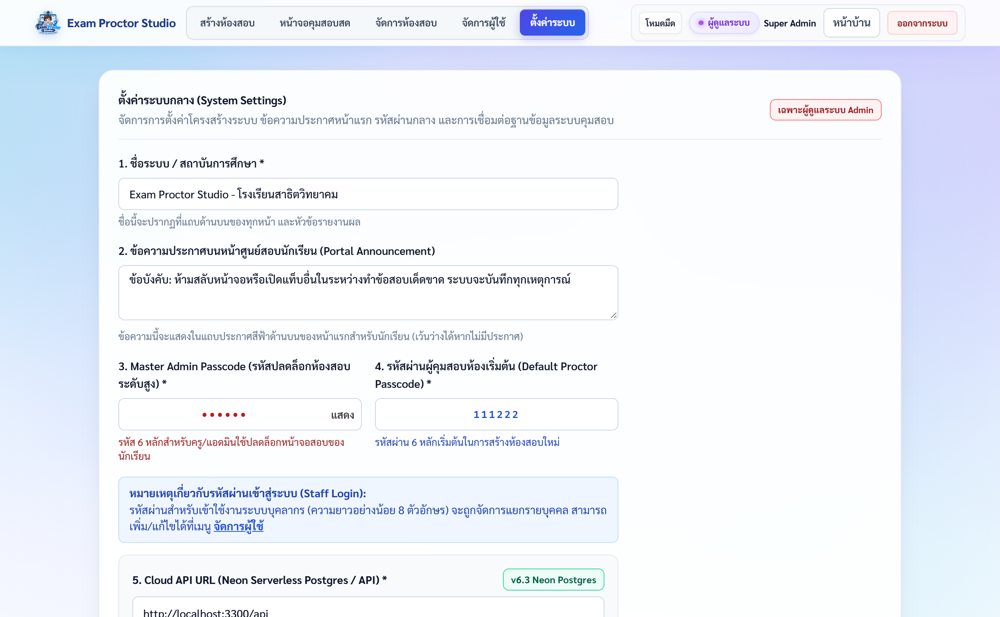
- ชื่อระบบ / สถาบันการศึกษา: จะปรากฏที่แถบ Navbar ทุกหน้า และหัวกระดาษรายงานผลราชการ
- ข้อความประกาศหน้านักเรียน: แสดงบนหน้าศูนย์สอบนักเรียน (index.html) เช่น คำเตือนเรื่องการสลับหน้าจอ
- รหัสผ่านกลางผู้ดูแลระบบ (Master Admin Passcode): รหัสผ่านฉุกเฉินสูงสุดสำหรับ Admin ใช้ปลดล็อกหน้าจอนักเรียนได้ทุกห้องสอบ
- Cloud Webhook URL: ที่อยู่ API สำหรับซิงก์ข้อมูลกับ Neon Serverless PostgreSQL
8. คำถามที่พบบ่อยสำหรับผู้ดูแลระบบ (Admin FAQ)
Q1: ครูผู้สอนลืมรหัสผ่านเข้าหลังบ้าน Admin ต้องทำอย่างไร?
คำตอบ: เข้าเมนู "จัดการผู้ใช้" ค้นหาชื่อครู กดปุ่ม "แก้ไข" แล้วพิมพ์รหัสผ่านใหม่ลงในช่องรหัสผ่าน จากนั้นกดบันทึก แจ้งรหัสผ่านใหม่ให้ครูเข้าใช้งานได้ทันที
Q2: ต้องการทดสอบความเร็วและการเชื่อมต่อฐานข้อมูลก่อนวันสอบจริง?
คำตอบ: ไปที่หน้า "หน้าจอคุมสอบสด" แล้วคลิกปุ่ม "ทดสอบ API" ระบบจะส่งคำขอ Ping ไปยัง Cloud Postgres และรายงานความเร็วการตอบสนองให้ทราบทันที